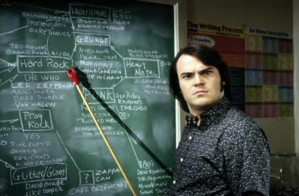

The juxtaposition between money and game, as it pertains to determining a man’s success with women, has to be one of the most hotly contested subjects around. You have one camp of men who believe that deft game conquers all (oftentimes your PUA guys). Then you have a second camp of men who believe that game is futile due to female hypergamy (oftentimes MGTOW guys).
It is the MGTOW contention that women are only drawn to men who are higher up the socioeconomic ladder than them, therefore, investing the time in learning the essence of “game” is pointless. I’ve spent many years pounding the pavement and have had the experience of being on both sides of the fence: I have played both indigent and an akin variant of provider game. Below is my perspective on this very polarizing topic.
My Origin Story

I would not consider myself a “natural” by any stretch of the imagination, but I was not a complete dud when it came to women during my high school and college years. Despite having a rudimentary understanding of “game,” I was able to get some fluke notches here-and-there, due to naturally being an outgoing person, excelling in team sports, and having a decent social-circle. It was not until the end of my senior year of college that I discovered Roosh, the PUA community, and the Manosphere. I took to the concepts, theories, and advice given by many of these self-proclaimed guru’s like a fish takes to water.
With my newly acquired knowledge of pick-up lines, female nature, and escalation strategies, I started getting a lot more traction with women. Fast-forward six months after graduating from college and discovering game; I took an internship at an undisclosed big metropolitan city with the hopes of getting a fulltime position with the company.
Unfortunately, it ended up not working out for me. Instead of going back home I decided to stay put, in the hopes of that I would eventually land a position elsewhere. Since I was unemployed, devoid of an income, and living off my savings; I ended up moving to a three-hundred dollar a month shoddy basement that someone on Craigslist was renting out—It was all I could afford at the time.
My mode of transportation was a dilapidated Pontiac Grand Prix that had an overheating problem due to a blown head gasket. I was so embarrassed by it. During dates, I would park it as far away from the venue as possible; this was so I could prevent my date from seeing what my daily commuter looked like. Despite being in such a lousy predicament, my thirst for sex and the novelty of living in a new city allowed me to remain steadfast in my pursuit of women.
Since I was unemployed and refused to work a low paying menial job (although in retrospect I probably should have), I had quite a lot of free time at my disposal. I was going out about three to four times a week and chatting up every cute girl I laid eyes on—I was obsessed. I became so proficient at my craft that I was getting laid about one in every three dates I scheduled—I never kept track, but I probably racked up close to 50 notches that year.
How did I manage to achieve such success you might ask? Through hard work, dedication and an IDGAF attitude. Since I did not have any money, my game was based around escalating as soon I sensed an opening. I also took risks I would normally not dare to take since I felt like I had nothing to lose. My aim was to approach, captivate, and get to sex as soon as possible. Preferably before the energy and booze begun to fade. That way I could keep things as sexual as possible and prolong having to engage in disqualifying small-talk, such as what I did for a living or what part of town I resided in (the lack of employment and crappy living situation gave me a lot of insecurity).
My hyper-sexual and masculine frame coupled with my evasive nature, particularly to personal questions about my life, gave me an aura that was really conducive for bedding women. This period of excessive serial dating and screwing on a shoestring budget lasted for about thirteen months until I finally got offered a very lucrative job.
I never again managed to reach the heights that I had reached during the time in my life in which I was dead-broke…
The Aftermath
At twenty-four years of age, I had no kids, absolutely no debt and I was making a six-figure annual income at my new job. I was by no means rich, but in comparison to most of my contemporaries, I was doing quite well. Long gone were the days of living in a crappy basement, driving a run-down jalopy, and having to worry if my debit card was going to go get declined. Due to the rigors of working as a corporate slave, five days a week, sometimes six, I took some time away from women to focus on my profession.
When I got back into the game eight months later, I was in for a rude awakening. On paper, I was a much better-equipped bachelor than the destitute man of twelve months ago. Yet for whatever reason, I was nowhere near close to being the pussy-slayer of old. I lost my cutting-edge and killer instinct. Instead of ending my dates/nights with a bang, more times than not, I was coming back home dick-in-hand. The situation I was in was so confounding; I was not doing anything different, so I thought. Plus, my newly acquired resources were supposed to propel me to the next level.
After a couple more months of sexless dating, I came to the realization that the reason I was struggling to get women undressed was down to my lack of masculine frame. During dates, I tried way too hard to qualify myself. I would boast about my academic achievements and dramatize the nature of my work. Later I discovered, as long as a man has the means to pick up the tab at the end of the night, the actual title and description of his job means little to a woman. This behavior of “selling myself” was a stark contrast to the mysterious, playful and evasive formula that served me so well in the past.
The extravagant venues I would oftentimes pick for dates and my proclivity to express to girls how “big my dick was” effectively killed off any intimacy or sexual tension that might have been there otherwise. Another side-effect of trying to woo women with displays of wealth is they subconsciously put you in the “provider” box. This is not necessarily a bad thing if you are trying to cultivate a long-term relationship, but if you’re trying to get to sex quickly, this is one of the worst things you can do. A woman will withhold sex from a man she thinks will make for a good beta breadwinner due to fear of not being taken seriously if she puts out too quickly.
She wouldn’t want to squander a great opportunity to leach off an unsuspecting man’s resources, would she?
So What Does This All Mean?

So you probably think I am one of those guys that believe money is unimportant, that good game and a masculine frame are all that are required to succeed with women. My answer to that assertion would be yes and no.
In the above anecdote when I was penniless but getting laid like it was going out of style; I failed to mention the sheer amount of hours I put in the streets hustling and bustling. It was not a big deal at the time because I was twenty-three years of age and had zero obligations, but today I no longer have the energy or time to partake in such a strenuous endeavor. It helped that I had a schedule and lifestyle that was pretty much tailor-made for seduction, due to virtually being available 24 hours a day, 7 days a week and not having the energy zapping burden of a nine to five job.
So where does money come into play? Although money does not guarantee success with women unless you pay for a prostitute, which I argue isn’t a legitimate notch; It does make things a hell of a lot easier when used properly. The biggest obstacle I encountered when running “indigent game” was retaining women, especially the more attractive ones with higher market values. It’s a known fact that women seek out men who have the means to provide for herself and offspring. Once a woman discovers you don’t have the money to put bread on the table, especially if she is nearing her biological clock, be prepared to get the boot.
Additionally, the highest tier of woman flock to where the money is at. If the runway model archetype is your thing (it happens to be mine), you’re going to have to get yourself immersed with the elitist crowd in your respective city or town. Unless you sell drugs or have really good connections, you’ll need to have to some status and money to have access to these more exclusive women. Lastly, higher quality women, as in eights and above, aren’t gonna be as eager to have an under ten dollars walk in the park kind of date, unlike women who are seven and below.
Conclusion
I was able to get laid without money and with money. Not having money in the bank does not prohibit a man from bedding attractive women as long as he’s well versed in the art of game. However, pursuing women on a tight budget can become quite labor-intensive.
In my experience, the most difficult challenge I was faced with was keeping the women in my roster around. I was constantly having to go back into the field to harvest out more leads so that I could keep my pipeline full. If I was able to get a few bangs out of a girl, I considered that to be a success. With that said, there are plenty of men who despite having lots of wealth can’t get laid to save their life—money does not guarantee anything. Therefore, it’s in a man’s best interest to familiarize himself with the mechanics of game.
What it does do though, is open the doors to many opportunities you would ordinarily not have available to you if you were broke. Additionally, success and money raises a man’s market value and provides him better opportunities to score with higher attractive females. An alpha who has his shit together is a force to be reckoned with.
I personally use my good job, nice car, and a luxury apartment as “bait”. Instead of lamenting about female hypergamy, I exploit it. I don’t brag about my successes like I once did; women can tell pretty quickly what a man’s economic standing in society is without him having to publicly announce it. Nor do I try to impress them with by making it rain in the club or taking them to extravagant dates (unless they have earned it). All these props are used to sell these women a “dream”. My aloof nature and seemingly affluent lifestyle keeps them spell-bounded.
On the surface, I am just a wholesome and successful man who’d make for an excellent provider. In reality, I am nothing more but a wolf in sheep clothing…
Read More: The Importance Of Money